Changes in PRIMAP-hist v2.6.1_final compared to v2.6_final for United Kingdom
2025-03-19
Johannes Gütschow
Change analysis for United Kingdom for PRIMAP-hist v2.6.1_final compared to v2.6_final
Overview over emissions by sector and gas
The following figures show the aggregate national total emissions excluding LULUCF AR6GWP100 for the country reported priority scenario. The dotted linesshow the v2.6_final data.

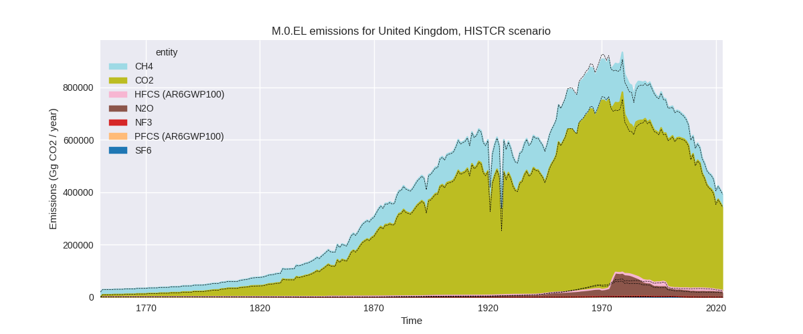
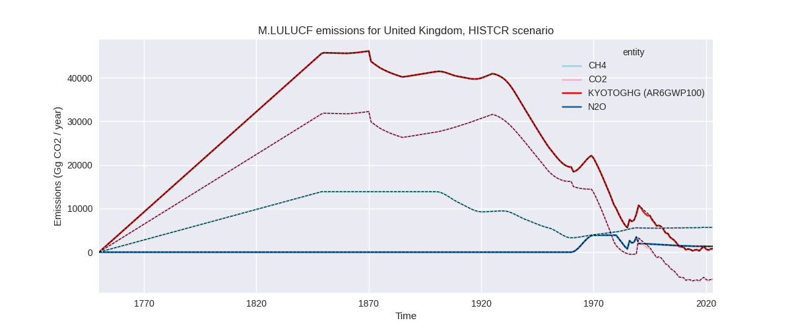
The following figures show the aggregate national total emissions excluding LULUCF AR6GWP100 for the third party priority scenario. The dotted linesshow the v2.6_final data.
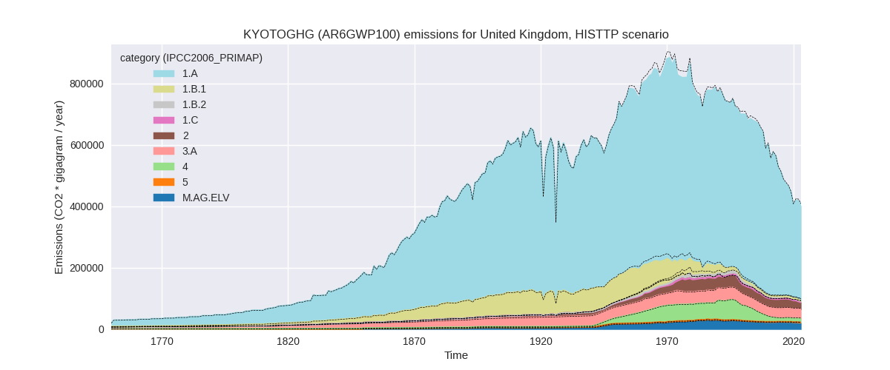
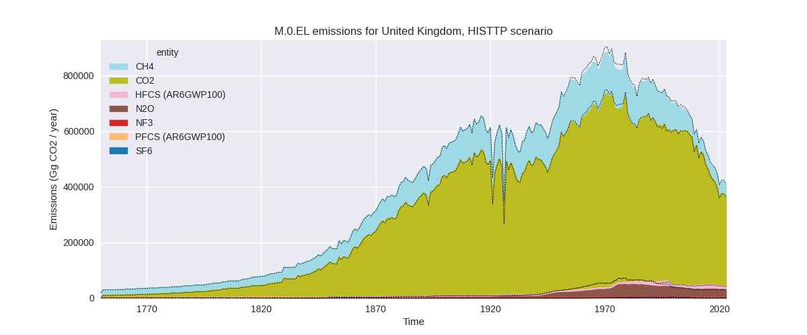
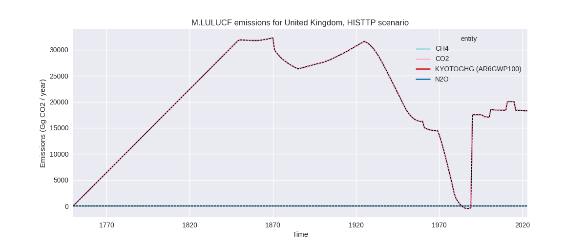
Overview over changes
In the country reported priority scenario we have the following changes for aggregate Kyoto GHG and national total emissions excluding LULUCF (M.0.EL):
- Emissions in 2023 have changed by 0.4%% (1714.58 Gg CO2 / year)
- Emissions in 1990-2023 have changed by 0.6%% (4001.82 Gg CO2 / year)
In the third party priority scenario we have the following changes for aggregate Kyoto GHG and national total emissions excluding LULUCF (M.0.EL):
- Emissions in 2023 have changed by -1.9%% (-7606.74 Gg CO2 / year)
- Emissions in 1990-2023 have changed by -1.0%% (-6224.69 Gg CO2 / year)
Most important changes per scenario and time frame
In the country reported priority scenario the following sector-gas combinations have the highest absolute impact on national total KyotoGHG (AR6GWP100) emissions in 2023 (top 5):
- 1: 2, CO2 with -1564.87 Gg CO2 / year (-8.5%)
- 2: 1.A, CO2 with 1326.41 Gg CO2 / year (0.4%)
- 3: 4, CH4 with 922.63 Gg CO2 / year (5.9%)
- 4: 5, N2O with 724.46 Gg CO2 / year (inf%)
- 5: 2, HFCS (AR6GWP100) with 406.01 Gg CO2 / year (5.5%)
In the country reported priority scenario the following sector-gas combinations have the highest absolute impact on national total KyotoGHG (AR6GWP100) emissions in 1990-2023 (top 5):
- 1: 1.A, CO2 with 1852.30 Gg CO2 / year (0.4%)
- 2: 5, N2O with 1835.26 Gg CO2 / year (inf%)
- 3: 2, HFCS (AR6GWP100) with 168.87 Gg CO2 / year (1.4%)
- 4: 4, CH4 with 99.33 Gg CO2 / year (0.2%)
- 5: 2, CO2 with -46.01 Gg CO2 / year (-0.1%)
In the third party priority scenario the following sector-gas combinations have the highest absolute impact on national total KyotoGHG (AR6GWP100) emissions in 2023 (top 5):
- 1: 1.B.2, CH4 with -2295.01 Gg CO2 / year (-45.8%)
- 2: 4, CH4 with -2124.96 Gg CO2 / year (-19.1%)
- 3: 2, CO2 with -1877.31 Gg CO2 / year (-16.9%)
- 4: 2, HFCS (AR6GWP100) with -965.55 Gg CO2 / year (-8.1%)
- 5: M.AG.ELV, N2O with -788.94 Gg CO2 / year (-3.8%)
In the third party priority scenario the following sector-gas combinations have the highest absolute impact on national total KyotoGHG (AR6GWP100) emissions in 1990-2023 (top 5):
- 1: 1.B.2, CH4 with -4928.45 Gg CO2 / year (-53.7%)
- 2: 2, N2O with -3428.64 Gg CO2 / year (-55.2%)
- 3: 2, HFCS (AR6GWP100) with 3221.10 Gg CO2 / year (30.5%)
- 4: 4, CH4 with -1824.33 Gg CO2 / year (-5.4%)
- 5: 1.B.1, CH4 with 378.76 Gg CO2 / year (6.9%)
Notes on data changes
Here we list notes explaining important emissions changes for the country.
- CRT data has been included but replaces official data which shows
only small differences which might come from different regional
definitions underlying the reporting.
- The small change in energy CO2 comes from a slight change in country reported energy CO2 emissions for 2022.
- Further changes for 2023 emissions in the CR scenario are form updated EDGAR data.
- N2O emissions in sector 5 (other) are now non-zero, because they are reported as missing in CRT and thus takes from EDGAR.
- Changes in the TP time-series come from updated EDGAR and FAO data. FAO has adjusted data for the latest years while EDGAR has updated full time-series with the main changes coming from the fugitive CH4, waste CH4, other N2O, and HFCs
- Pre-1990 changes come from changed pre-1990 EDGAR emissions (e.g. N2O in 2.B) (EDGAR)
Changes by sector and gas
For each scenario and time frame the changes are displayed for all individual sectors and all individual gases. In the sector plot we use aggregate Kyoto GHGs in AR6GWP100. In the gas plot we usenational total emissions without LULUCF.
country reported scenario
2023
 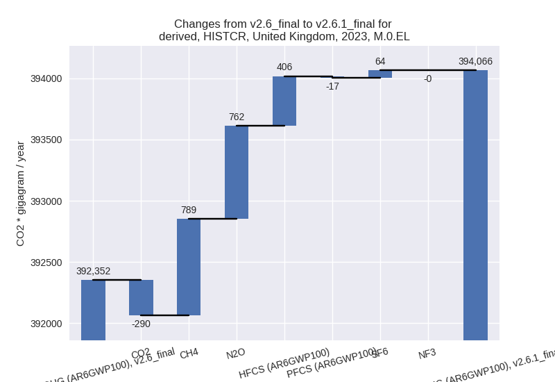
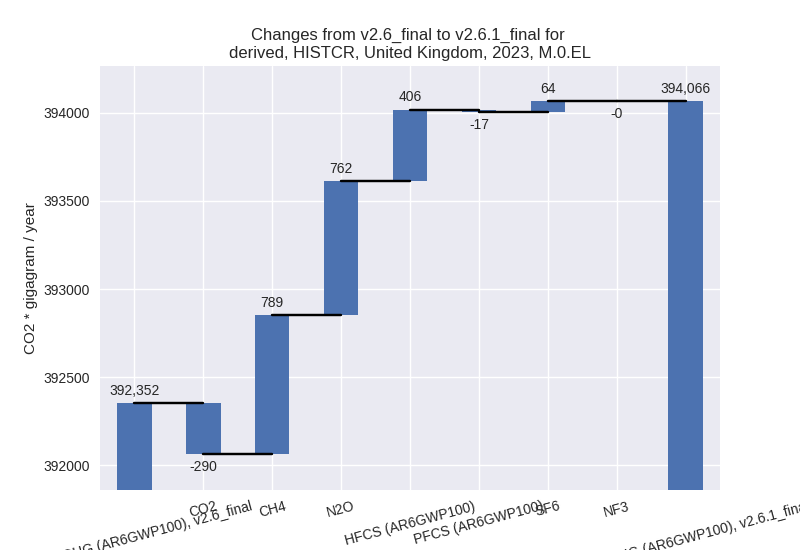
1990-2023
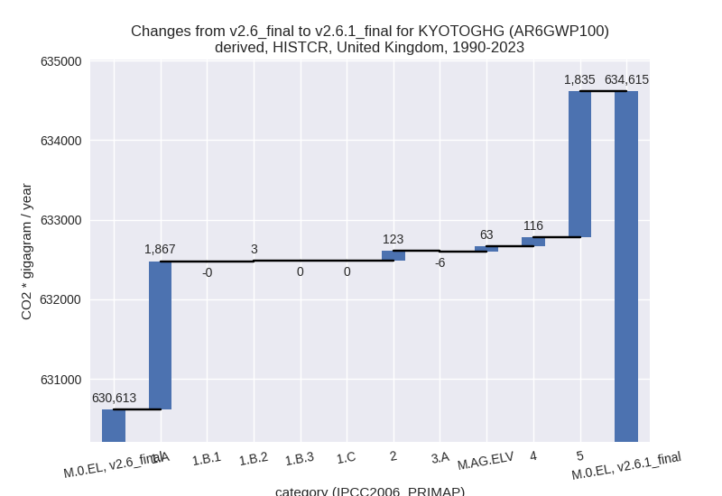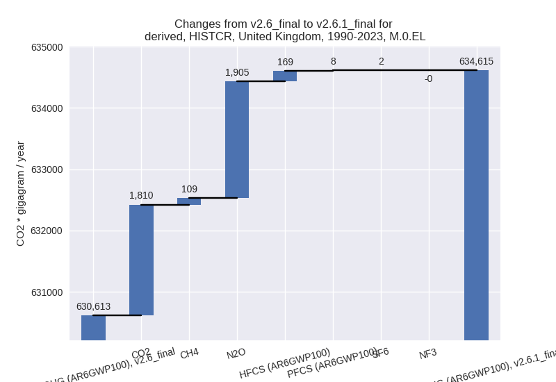
third party scenario
2023
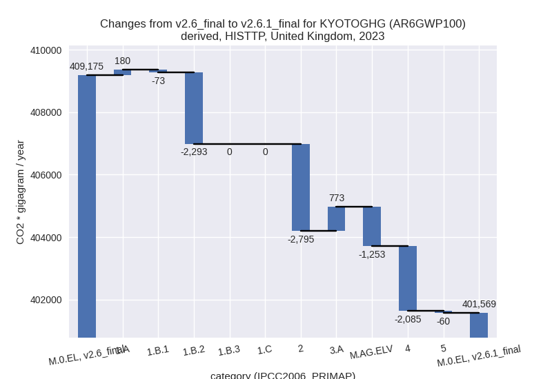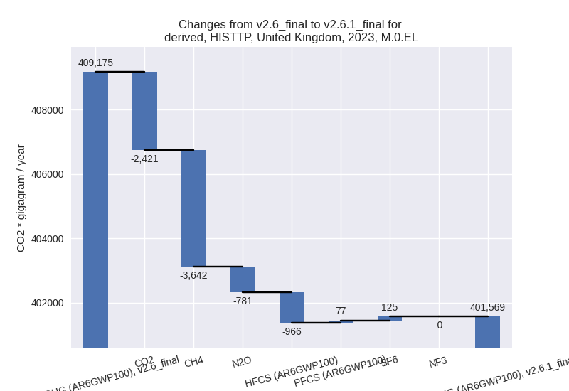
1990-2023
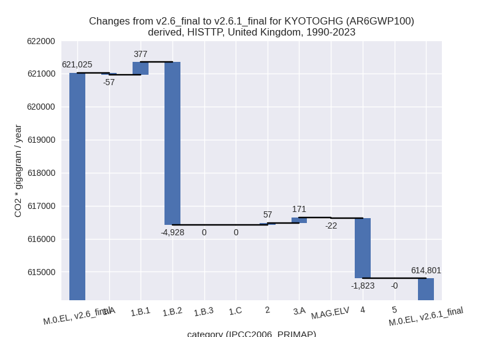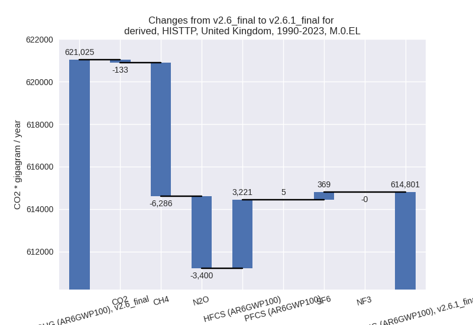
Detailed changes for the scenarios:
country reported scenario (HISTCR):
Most important changes per time frame
For 2023 the following sector-gas combinations have the highest absolute impact on national total KyotoGHG (AR6GWP100) emissions in 2023 (top 5):
- 1: 2, CO2 with -1564.87 Gg CO2 / year (-8.5%)
- 2: 1.A, CO2 with 1326.41 Gg CO2 / year (0.4%)
- 3: 4, CH4 with 922.63 Gg CO2 / year (5.9%)
- 4: 5, N2O with 724.46 Gg CO2 / year (inf%)
- 5: 2, HFCS (AR6GWP100) with 406.01 Gg CO2 / year (5.5%)
For 1990-2023 the following sector-gas combinations have the highest absolute impact on national total KyotoGHG (AR6GWP100) emissions in 1990-2023 (top 5):
- 1: 1.A, CO2 with 1852.30 Gg CO2 / year (0.4%)
- 2: 5, N2O with 1835.26 Gg CO2 / year (inf%)
- 3: 2, HFCS (AR6GWP100) with 168.87 Gg CO2 / year (1.4%)
- 4: 4, CH4 with 99.33 Gg CO2 / year (0.2%)
- 5: 2, CO2 with -46.01 Gg CO2 / year (-0.1%)
Changes in the main sectors for aggregate KyotoGHG (AR6GWP100) are
- 1: Total sectoral emissions in 2022 are 319518.60 Gg CO2 / year which is 78.0% of M.0.EL emissions. 2023 Emissions have changed by 0.5% (1409.55 Gg CO2 / year). 1990-2023 Emissions have changed by 0.4% (1870.24 Gg CO2 / year).
- 2: Total sectoral emissions in 2022 are 28246.48 Gg
CO2 / year which is 6.9% of M.0.EL emissions. 2023 Emissions have
changed by -3.9% (-1062.75 Gg CO2 /
year). 1990-2023 Emissions have changed by 0.2% (122.78 Gg CO2 / year). For 2023 the
changes per gas
are:
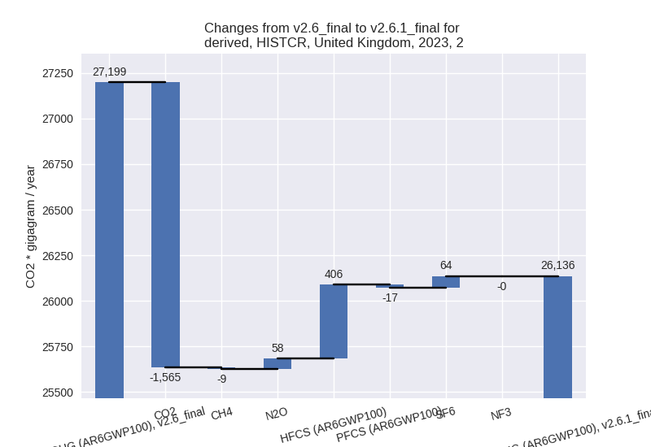 - M.AG: Total sectoral emissions in 2022 are 42150.09 Gg CO2 / year which is 10.3% of M.0.EL emissions. 2023 Emissions have changed by -0.7% (-273.44 Gg CO2 / year). 1990-2023 Emissions have changed by 0.1% (57.36 Gg CO2 / year).
- 4: Total sectoral emissions in 2022 are 18820.14 Gg
CO2 / year which is 4.6% of M.0.EL emissions. 2023 Emissions have
changed by 5.2% (916.76 Gg CO2 /
year). 1990-2023 Emissions have changed by 0.2% (116.17 Gg CO2 / year). For 2023 the
changes per gas
are:
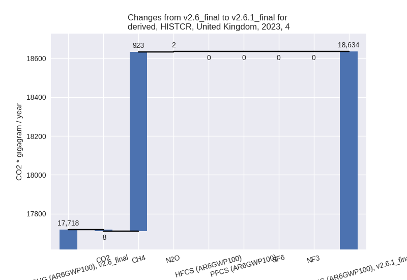 - 5: Total sectoral emissions in 2022 are 779.54 Gg
CO2 / year which is 0.2% of M.0.EL emissions. 2023 Emissions have
changed by inf% (724.46 Gg CO2 /
year). 1990-2023 Emissions have changed by inf% (1835.26 Gg CO2 / year). For 2023 the
changes per gas
are:
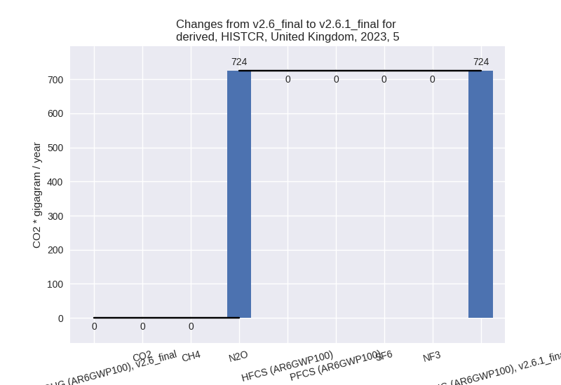
For 1990-2023 the changes per gas are:
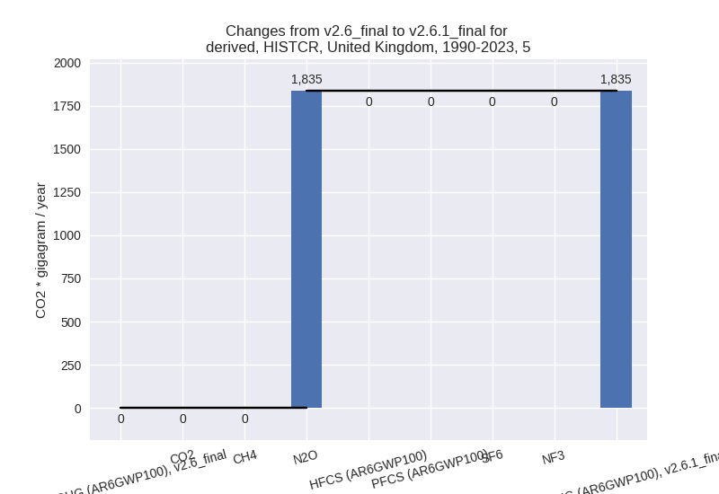
third party scenario (HISTTP):
Most important changes per time frame
For 2023 the following sector-gas combinations have the highest absolute impact on national total KyotoGHG (AR6GWP100) emissions in 2023 (top 5):
- 1: 1.B.2, CH4 with -2295.01 Gg CO2 / year (-45.8%)
- 2: 4, CH4 with -2124.96 Gg CO2 / year (-19.1%)
- 3: 2, CO2 with -1877.31 Gg CO2 / year (-16.9%)
- 4: 2, HFCS (AR6GWP100) with -965.55 Gg CO2 / year (-8.1%)
- 5: M.AG.ELV, N2O with -788.94 Gg CO2 / year (-3.8%)
For 1990-2023 the following sector-gas combinations have the highest absolute impact on national total KyotoGHG (AR6GWP100) emissions in 1990-2023 (top 5):
- 1: 1.B.2, CH4 with -4928.45 Gg CO2 / year (-53.7%)
- 2: 2, N2O with -3428.64 Gg CO2 / year (-55.2%)
- 3: 2, HFCS (AR6GWP100) with 3221.10 Gg CO2 / year (30.5%)
- 4: 4, CH4 with -1824.33 Gg CO2 / year (-5.4%)
- 5: 1.B.1, CH4 with 378.76 Gg CO2 / year (6.9%)
Changes in the main sectors for aggregate KyotoGHG (AR6GWP100) are
- 1: Total sectoral emissions in 2022 are 326452.30 Gg CO2 / year which is 78.2% of M.0.EL emissions. 2023 Emissions have changed by -0.7% (-2185.98 Gg CO2 / year). 1990-2023 Emissions have changed by -0.9% (-4607.84 Gg CO2 / year).
- 2: Total sectoral emissions in 2022 are 25008.60 Gg
CO2 / year which is 6.0% of M.0.EL emissions. 2023 Emissions have
changed by -10.8% (-2795.47 Gg CO2 /
year). 1990-2023 Emissions have changed by 0.2% (57.49 Gg CO2 / year). For 2023 the
changes per gas
are:
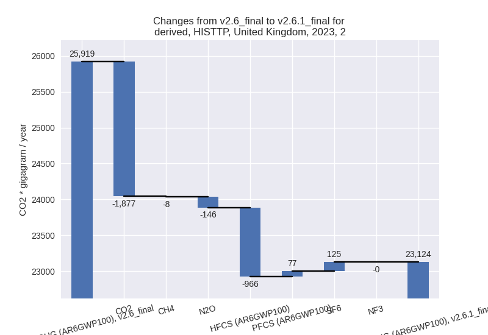 - M.AG: Total sectoral emissions in 2022 are 53859.65 Gg CO2 / year which is 12.9% of M.0.EL emissions. 2023 Emissions have changed by -0.9% (-480.42 Gg CO2 / year). 1990-2023 Emissions have changed by 0.2% (148.55 Gg CO2 / year).
- 4: Total sectoral emissions in 2022 are 11276.57 Gg
CO2 / year which is 2.7% of M.0.EL emissions. 2023 Emissions have
changed by -15.7% (-2085.04 Gg CO2 /
year). 1990-2023 Emissions have changed by -5.1% (-1822.84 Gg CO2 / year). For 2023
the changes per gas
are:
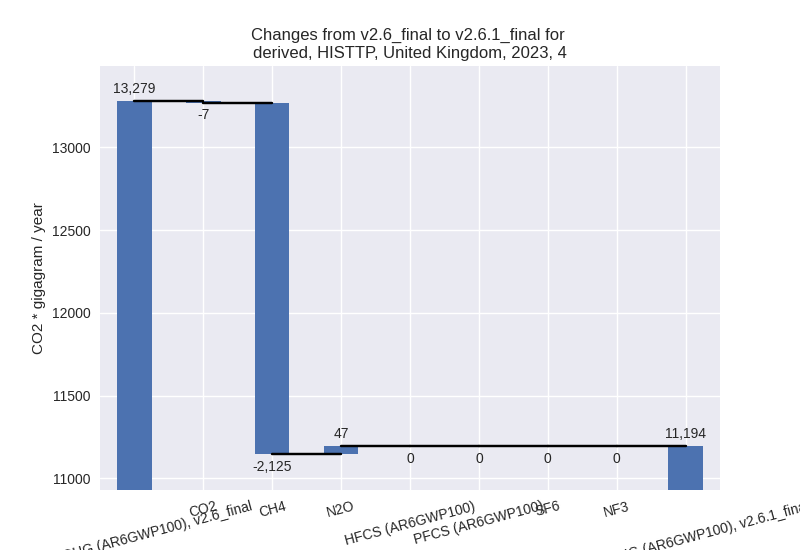
For 1990-2023 the changes per gas are:
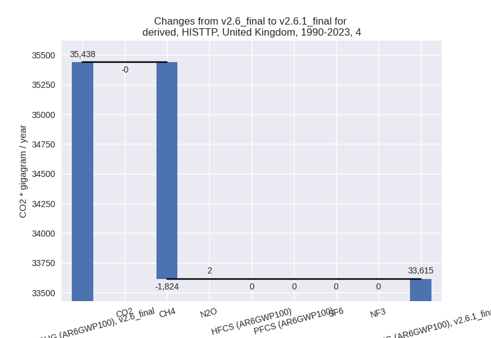 - 5: Total sectoral emissions in 2022 are 779.54 Gg
CO2 / year which is 0.2% of M.0.EL emissions. 2023 Emissions have
changed by -7.6% (-59.82 Gg CO2 /
year). 1990-2023 Emissions have changed by -0.0% (-0.05 Gg CO2 / year). For 2023 the
changes per gas
are:
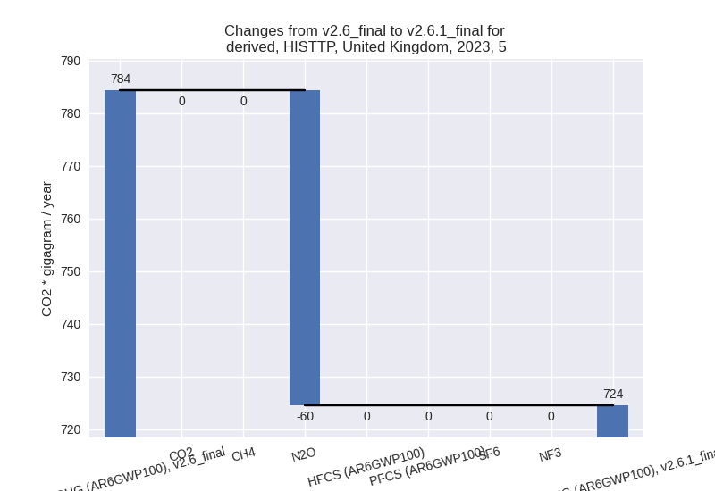